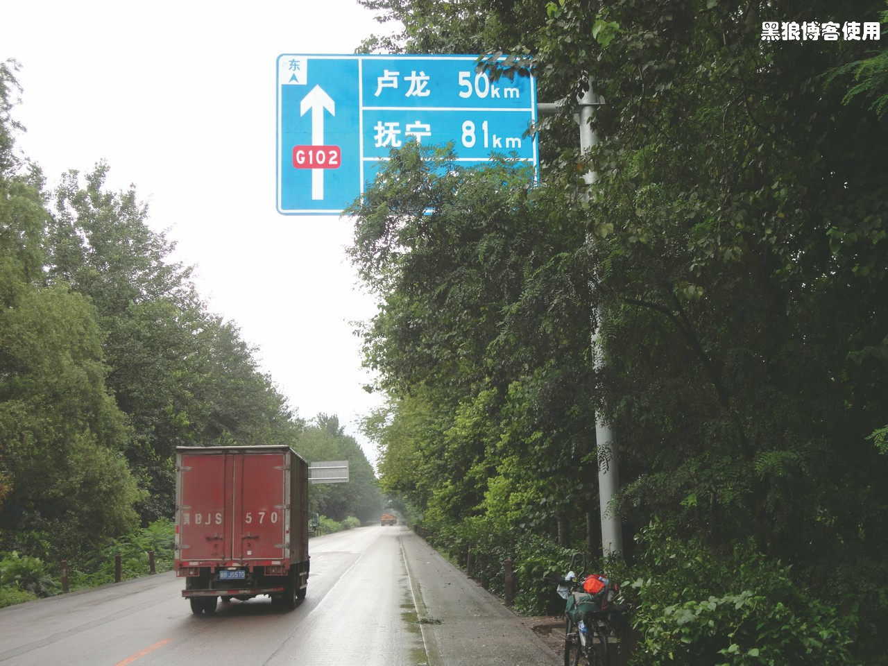
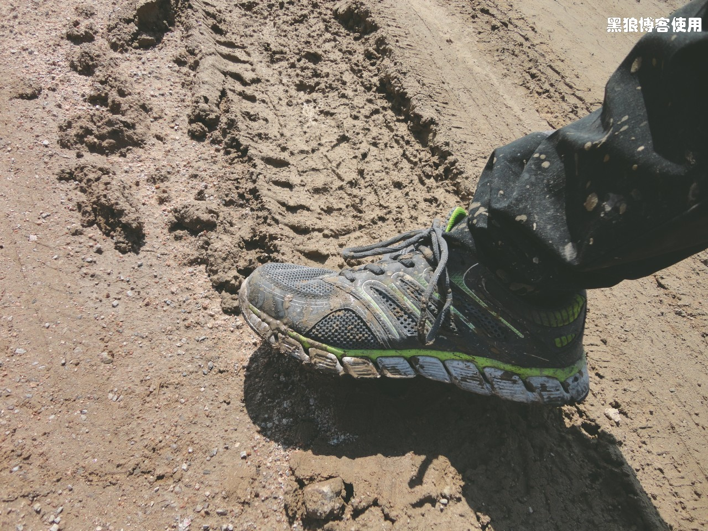

题外话：
- 二十年没有骑自行车了，为何有这次旅行？
- 好哥们老怀问我：为了证明什么吗？为了什么理想吗？为了什么？
- 其实没有想那么多，正像网友说的：有些事情现在不做，也许以后永远也不会做了。
- 当今天有个哥们喊我老师傅的时候，我越发有这种体会。
今天早晨本来想起个大早，结果起来后是 7 点 10 分。旅馆的服务员还不错，我都结完帐了，正在捆大包的时候，把我的手机给我送来，落在房间里了。
8:10 正式出发，今天的目的地是山海关。路上很湿滑，不知道会不会下雨。本来想穿上雨衣脚套什么的，待会再说吧。
刚走了几分钟，零星小雨，先把鞋套带上。早上起来没有着急快骑，先慢慢溜达着，等身体热了后再加速。雨越来越大，把雨衣也穿上了，有点闷热。
胡有理同志一会儿的功夫，给我打了好几个电话。她没买到去长春的飞机票，只能买到沈阳的，然后再从沈阳坐火车到长春。她问我有没有收到她的火车票订单确认，因为我拿着她的淘汰手机。我找了半天，没有。没一会儿，又来电话，让我帮着订火车票，我说扯淡，拒绝。两分钟后又来电话，让我告诉她小孩的身份证号，我说我没带身上。一会儿又来电话，问我小孩奶奶的手机号，我说你还行不行啊，直接挂机，大雨这么大，气死我了。
雨天 GPS 就不灵了，因为我不知道自己在哪里。
看到G102 国道了，山海关 155 公里。雨已经停了，刚把我的包打湿就停了。不过雨衣还要穿着，上面都是泥没法装包里，而且一会儿可能再下雨。
9:13 骑行了 12 公里。热的难受，把雨衣上衣脱了，裤子卷起来，凉快许多。
出了个小插曲，车子突然蹬不动了，吓我一跳，还以为抛锚了呢。下来一看，绳子绕到链条里面了，费了半天劲，满手油污，搞定。

本来以为会搞一身水，结果弄了一身泥。算了，还是把雨裤脱了吧。路上没有行人和自行车，都是汽车。
10:10 骑了 28 公里，速度有些慢。一开始有雨，没敢快骑，现在路上都是泥，也不敢太快。赶紧下雨吧，让我出于淤泥。出淤泥而不染。
10:15 正骑着呢，把手机导航打开，发现一个严重问题，走错路了，而且是垂直角度，只能返回。当返回到 G102 的时候，来回多绕了 8 公里多，本来 155，现在 160 多了。走错路比较影响士气，下来歇一会儿，身上都是泥。
（卢龙还有 50 公里）
11:08 已经骑行了 40.7公里。今天带的水不多， 待会还要补充。本来以为包里面的是水，结果拿出来一看，是胡有理给我带的黄瓜，嘿！算了，等会再说吧，留到最后吧。
11:30 下来后一摸前胎，只有半气儿了，哎，至少耽误了 20 公里，早点发现就好了。路边正好有修自行车的。
花了 10 块钱把我自己带的备胎换上，继续前进，这回轻松多了。

（中午吃饭的时候照的，满身泥污）
13:00 吃完饭，继续出发。现在已经是太阳高照，阳光毒辣，感觉还不如有小雨的时候舒服呢。

13:10 到了G102 的 200 公里处，骑行了 58 公里，下午的速度保持正常。看来上午并不是我的体力不支，而是车胎的问题。现在感觉体力还不错嘛！
又到了一处地方，叫野鸡坨，前方的水很深，没有一辆车敢穿过，我犹豫了一会儿，决定绕行。绕行的距离并不远，大概 1 公里多吧。
14:25 骑行了 79 公里后， 遇到了大概 2 公里长的泥泞道路，泥浆很深，特别的颠簸，很累。
（我的鞋子上都是泥水）↑
自行车上也都是泥水，尤其车链子，应该清洗一下。
14:40 到达了秦皇岛市卢龙县，已经走了 83 公里。
15:41 找了个洗汽车的地方，要了 2 盆水把车链子洗了下，这回轻快了许多。
16:40 休息了一会儿，一摸车子后胎，心里一凉，又是半气，祸不单行呀，前胎刚换完后胎又没气了，打气、给车链子上油，继续出发。

17:35 已经骑行了 121 公里，离秦皇岛还有 30 公里，离山海关还有 56 公里，胜利在望， 不过我的目的地是山海关。
今天更加的风尘仆仆。
又给自行车打了次气，这次应该能坚持一段时间。
18:36 往裤兜子里面塞了些爽身粉，很爽。

19:10 离山海关还有 27 公里，到目的地问题不大。
秦皇岛的人太热情了，火车站门前 500 米的路程，居然耗费了我 40 多分钟，要不我都快到了！两个哥们给我指错了路，一个哥们拦住路不让我过。后面包上的两瓶水也丢了，现在是又累又饿。不过哥们我执意要走，挽留也不停歇。
21:10 我略带嘶哑的嗓音嚎叫着，满身泥污，冲进了山海关。今天的总里程174 公里。

（山海关的夜景）

晚上到网吧更新博客，结果快到 12 点了，还没有搞完，算了，明天再更新。

回到宾馆，准备睡觉，顺手摸了下车胎，后胎又只剩少半气了，拆、卸、补胎，折腾到了快 1 点了。
睡！明天还要赶路。

（第二天行程下来，身体状况还不错。今天的坡路比较多，体力消耗比较大。不过老天还是没有让我出淤泥而不染！）